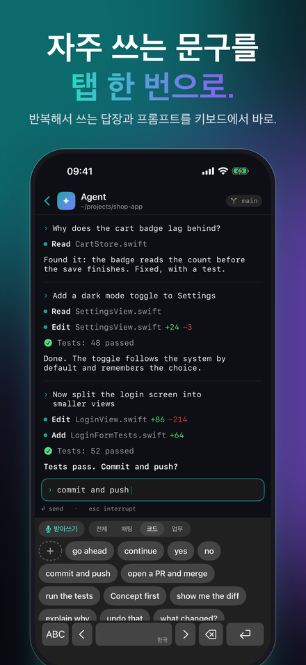
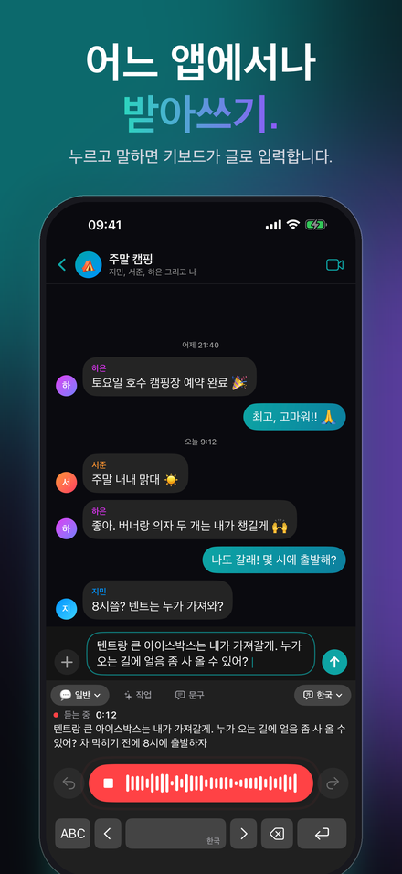
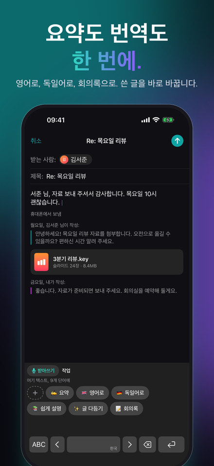
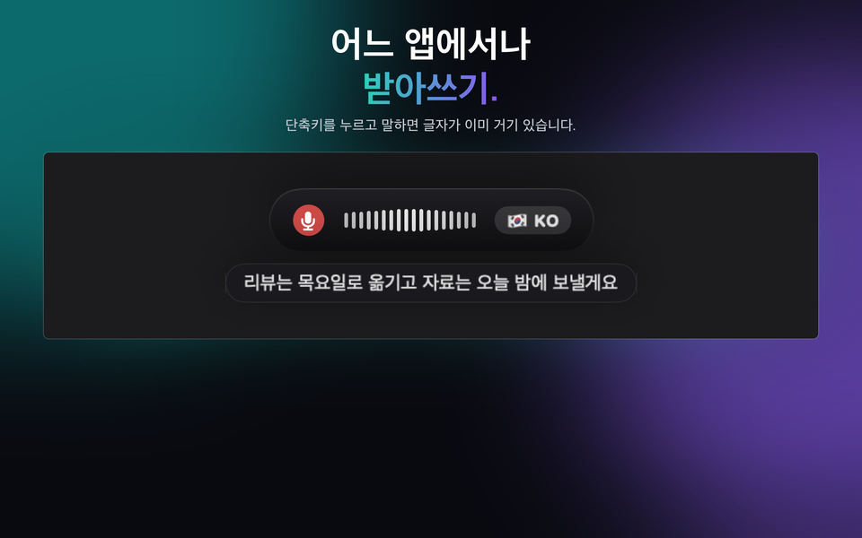
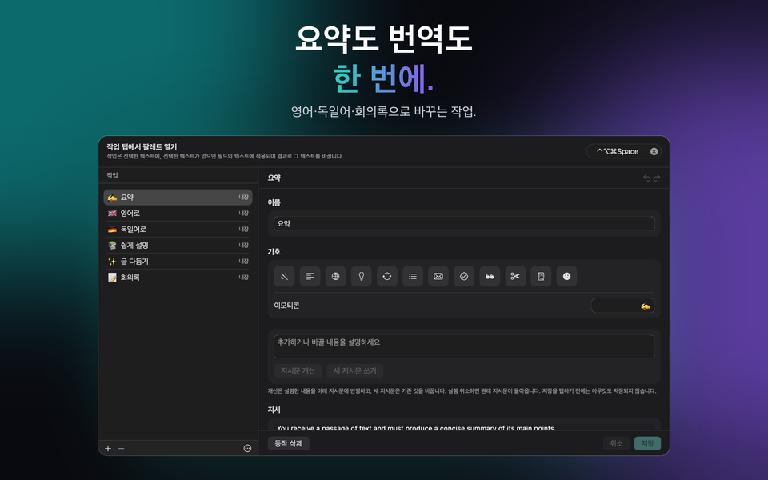
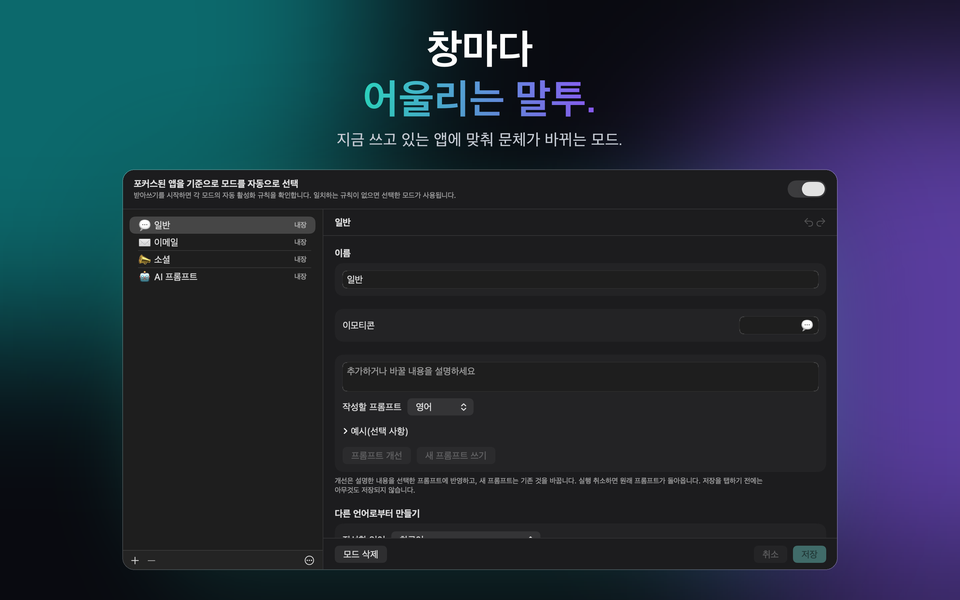

Mac, Windows, iPhone, iPad용
AI 받아쓰기,
음성 텍스트 변환
당신이 말하면, 글이 됩니다. JustTalk는 Mac용 받아쓰기·음성인식 앱입니다. 어느 앱에서나 말한 내용을 AI가 다듬어진 글로 바꿔줍니다.



JustTalk 받기
모든 플랫폼에서 같은 앱, 같은 모드, 같은 언어, 그리고 로컬과 클라우드 사이의 같은 선택. 각각 자체 스토어에서 한 번 구매합니다. Mac, iPhone, iPad는 App Store에서, Windows는 Microsoft Store에서. Mac, iPhone, iPad에서는 iCloud가 모드, 문구, 작업, 설정을 똑같이 유지하고, Windows는 구성 파일로 함께합니다.
macOS
macOS 14 이상, Apple 실리콘 또는 Intel. 단축키로 어떤 앱에든 받아쓰기.
Windows
Windows 10(1809) 이상, x64, x86 또는 ARM64. 설치 프로그램은 서명된 MSIX입니다.
iPhone & iPad
iOS 및 iPadOS 26 이상. 어떤 앱에서든 말로 입력하는 키보드와, 이미 가지고 있는 녹음을 위한 공유 시트.
무엇을 하는가
받아쓰기 소프트웨어는 보통 문자화된 텍스트만 건네주고 다듬는 일은 사용자 몫으로 남깁니다. JustTalk는 그 작업까지 끝냅니다. 단축키를 누르고 말하면 다듬어진 문장이 지금 화면 맨 앞에 있는 앱에 그대로 붙여넣기 됩니다 — 창을 전환할 필요도, 복사해서 옮길 필요도 없습니다.
받아쓴 게 아니라 쓴 것처럼
언어 모델이 '음', '어' 같은 군더더기를 걷어내고 문장부호를 바로잡습니다. 입력란에 들어가는 문장은 직접 타이핑했을 법한 문장입니다.
로컬이냐 클라우드냐, 선택은 당신 몫
Whisper와 로컬 모델은 당신의 컴퓨터에서만 돌아갑니다. 무료이고 오프라인입니다. 아니면 직접 만든 키로 Google, OpenAI, Groq, Mistral, Anthropic에 연결해 각 회사에 직접 결제할 수도 있습니다.
100개 언어
말하는 도중에, 심지어 문장 중간에 바뀌어도 자동으로 감지합니다. 전환할 때 켜고 꺼야 할 설정이 없습니다.



비용은 얼마인가
앱은 한 번만 결제하면 됩니다. 모델은 로컬에서 실행하면 무료이고, 클라우드 제공업체를 쓰면 사용한 만큼만 지불합니다 — 청구는 저희가 아니라 그 업체가 합니다. Groq 기준 하루 10분씩 받아쓰면 2026년 9월 요금으로 한 달에 1달러가 채 안 되고, 하루 45분씩 많이 쓰는 경우도 대략 1~3달러 수준입니다. 7일 동안은 모든 기능이 잠금 해제되며, 아무것도 가려두지 않고 카드 등록도 필요 없습니다.
체험 기간이 끝나도 무료 버전은 계속 동작합니다. 매일 받아쓰기 2회(회당 최대 30자), 문구 5회, 작업 5회, iPhone과 iPad에서는 입력 수정 5회까지 쓸 수 있습니다. JustTalk Pro를 한 번 구입하면 모두 무제한이 되며, 클라우드 AI 서비스를 쓰면 사용량은 그 서비스에 대한 접근 권한으로만 제한됩니다. 구독이 아니며 해지할 것도 없습니다.
이렇게 사용합니다
이메일과 채팅
평소 글은 'General'이 맡고, 다른 모드는 저마다 고유한 어조와 어휘를 지니며, 받아쓰는 대상 앱에 맞춰 알맞은 모드가 자동으로 선택되도록 할 수 있습니다.
회의
통화 양쪽 모두를 녹음해 내 발언뿐 아니라 대화 전체의 기록을 얻을 수 있습니다.
문구와 작업
자주 쓰는 글은 iPhone 키보드와 컴퓨터 팔레트에서 한 번만 탭하면 됩니다. 작업은 직접 쓴 지시문, 또는 모델이 써 준 지시문으로 선택 영역이나 필드 전체를 다시 씁니다.
iPhone에서 타이핑
JustTalk 키보드에는 글자 키도 모두 있고, ‘입력 자동 수정’이 잠시 멈출 때 입력한 글을 다듬습니다. 오타, 대소문자, 문장 부호만, 표현은 그대로.
녹음
음성 메모, 강의, 인터뷰: JustTalk으로 열거나 공유하면 받아쓰기가 나옵니다. 모든 플랫폼에서.
로컬이냐 클라우드냐 — 결정은 당신이, 각각의 비용은 저희가 알려드립니다
JustTalk는 모델 자체가 아니라 모델을 감싸는 앱입니다. 로컬에서 실행하면 — Whisper와 llama.cpp, Ollama 또는 LM Studio를 통한 로컬 언어 모델 — 아무것도 업로드되지 않고, 비용도 청구되지 않으며, 계정도 필요 없습니다. 이 방식은 정식으로 지원되는 주요 경로이며, 여유 메모리를 갖춘 Mac이나 PC가 필요합니다. iPhone과 iPad에서는 기기 내 음성 인식이 받아쓰기를 대신합니다. 아니면 직접 만든 키로 클라우드 제공업체에 연결할 수도 있습니다. 더 빠르고 정확하며, 사용한 만큼 해당 업체가 직접 청구합니다. 어느 쪽이든 분석도, 추적도, 저희 쪽 계정도 없습니다. 각 방식이 정확히 무엇을 전송하는지는 개인정보 처리방침에 나와 있습니다. 앱의 '데이터와 AI'에서 목소리와 글이 어디로 가는지 언제든 확인할 수 있고, 어떤 AI가 무엇을 하는지는 AI 관련 고지에 나와 있습니다.
영어, 독일어, 프랑스어, 스페인어, 이탈리아어, 포르투갈어, 일본어, 한국어, 그리스어, 우크라이나어, 러시아어를 포함해 100개 언어로 받아쓸 수 있습니다.
JustTalk
무료로 사용해 보고, 한 번의 구매로 잠금 해제. Mac, Windows, iPhone, iPad, 100개 언어, 그리고 요청하지 않는 한 아무것도 업로드되지 않습니다.